6 Graphics
6.1 Introduction
In this chapter, we cover graphic functions in R. There are multiple ways to create graphics in R, but we will focus on the base R graphics system and the ggplot2 package from the tidyverse package. The tidyverse package consists of multiple packages that are designed for data science and data visualization. In Table 6.1, we list the core packages in the tidyverse package.
| Package | Purpose |
|---|---|
ggplot2 |
Data visualization using the Grammar of Graphics |
dplyr |
Data manipulation (filter, summarize, mutate, arrange, etc.) |
tidyr |
Data tidying (reshape, pivot, separate, unite) |
readr |
Reading rectangular data (CSV, TSV, etc.) |
tibble |
Modern, user-friendly version of data frames |
stringr |
String manipulation |
forcats |
Handling categorical (factor) variables |
purrr |
Functional programming and iteration tools |
6.2 The base R approach to graphics
The base approach to graphics consists of two types of functions: high-level plotting functions and low-level plotting functions. We use the high-level plotting functions to create a new plot and the low-level plotting functions to customize the existing plot. In Table 6.2, we list some of the commonly used high-level plotting functions in base R.
| Function | Description |
|---|---|
plot() |
Scatterplot and line plot |
hist() |
Histogram |
boxplot() |
Boxplot |
pie() |
Pie chart |
qqplot(), qqnorm(), qqline()
|
Quantile plots |
density() |
Density plot |
sunflowerplot() |
Sunflower scatterplot |
pairs() |
Scatter plot matrix |
symbols() |
Draw symbols on a plot |
dotchart(), barplot(), pie()
|
Dot chart, bar chart, pie chart |
curve() |
Draw a curve from a given function |
image() |
Create a grid of colored rectangles |
contour(), filled.contour()
|
Contour plot |
persp() |
Plot 3-D surface |
In Table 6.3, we list some of the commonly used low-level plotting functions in base R.
| Function | Description |
|---|---|
points() |
Add points to a figure |
lines() |
Add lines to a figure |
text() |
Insert text in the plot region |
mtext() |
Insert text in the figure and outer margins |
title() |
Add figure title or outer title |
legend() |
Insert legend |
axis(), axis.Date()
|
Customize axes |
abline() |
Add horizontal and vertical lines or a single line |
box() |
Draw a box around the current plot |
rug() |
Add a 1-D plot of the data to the figure |
polygon() |
Draw a polygon |
rect() |
Draw a rectangle |
arrows() |
Draw arrows |
segments() |
Draw line segments |
trans3d() |
Add 2-D components to a 3-D plot |
In this part, we show how the high and low level plotting functions can be used to create different types of plots.
6.2.1 Scatterplots and line plots
We use the plot function to create scatterplots and line plots. The plot function has many arguments that allow us to customize the plot. The syntax for the plot function is as follows:
The par function is used to set or query graphical parameters. If we type ?par in the R console, we will see a long list of graphical parameters that can be set using the par function. Below, we list some of the commonly used arguments in the plot function:
-
type: 1-character string denoting the plot type
-
xlim: x-axis limits, e.g.,c(x1, x2)
-
ylim: y-axis limits, e.g.,c(y1, y2)
-
log: Character string that contains"x"if x-axis is log-scale,"y"if y-axis is log-scale, and"xy"if both axes are log-scale
-
main: Main title for the plot
-
sub: Subtitle for the plot
-
xlab: x-axis label
-
ylab: y-axis label
-
ann: Logical; should default annotation appear on plot
-
axes: Logical; should both axes be drawn
-
col: Color for lines and points; either a character string or a number that indexes thepalette()
-
pch: Number referencing a plotting symbol or a character string
-
cex: Number giving the character expansion of the plot symbols
-
lty: Number referencing a line type
-
lwd: Line width
For illustrations, we use the dataset in the caschool.csv file. This dataset contains information on kindergarten through eighth-grade students across 420 California school districts in 1999. It is a district-level dataset that includes variables on average student performance and demographic characteristics. Table 6.4 provides a description of the variables in the caschool.csv file.
| Variable | Description |
|---|---|
dist_code |
District code |
read_scr |
Average reading score |
math_scr |
Average math score |
county |
County |
district |
District |
gr_span |
Grade span of district |
enrl_tot |
Total enrollment |
teachers |
Number of teachers |
computer |
Number of computers |
testscr |
Average test score (= (read_scr + math_scr)/2) |
comp_stu |
Computers per student (= computer / enrl_tot) |
expn_stu |
Expenditures per student |
str |
Student-teacher ratio (= teachers / enrl_tot) |
el_pct |
Percent of English learners |
meal_pct |
Percent qualifying for reduced-price lunch |
clw_pct |
Percent qualifying for CalWorks |
aving |
District average income (in $1000s) |
# Load the caschool dataset
caschool <- read.table("data/caschool.csv", header = TRUE, sep = ",")
# Column names of the caschool dataset
colnames(caschool) [1] "Observation.Number" "dist_cod" "county"
[4] "district" "gr_span" "enrl_tot"
[7] "teachers" "calw_pct" "meal_pct"
[10] "computer" "testscr" "comp_stu"
[13] "expn_stu" "str" "avginc"
[16] "el_pct" "read_scr" "math_scr" In the following code chunk, we create a scatterplot of test scores versus student-teacher ratio using the plot function.
# Scatterplot of test scores vs. student-teacher ratio
plot(caschool$str, caschool$testscr,
type = "p", # scatterplot
main = "Test Scores vs. Student-Teacher Ratio",
xlab = "Student-teacher ratio",
ylab = "Test scores",
col = "steelblue",
pch = 19, # solid circle
cex.lab = 0.8, # axis label size
cex.main = 0.9, # main title size
cex.axis = 0.7, # axis tick label size
panel.first = grid() # add grid lines
)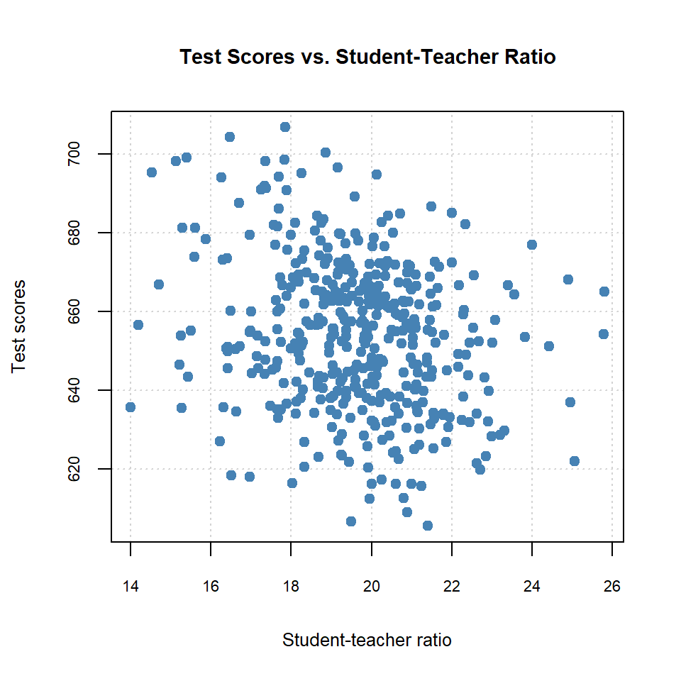
In the following code chunk, we create a new categorical variable category based on the test scores. We then use this variable to categorize schools into four groups: “Excellent”, “Good”, “Average”, and “Below Average”. We use different colors and plotting symbols to represent different categories of schools in the scatterplot. The legend is added using the legend function. The scatterplot is shown in Figure 6.2.
# Add category column based on test scores
caschool$category <- NA # Initialize a new column for category
for (i in 1:nrow(caschool)) {
if (caschool$testscr[i] >= 680) {
caschool$category[i] <- "Excellent"
} else if (caschool$testscr[i] >= 665) {
caschool$category[i] <- "Good"
} else if (caschool$testscr[i] >= 640) {
caschool$category[i] <- "Average"
} else {
caschool$category[i] <- "Below Average"
}
}# Define colors and plotting symbols for each category
colors <- c("Excellent" = "darkgreen", "Good" = "blue", "Average" = "orange", "Below Average" = "red")
symbols <- c("Excellent" = 17, "Good" = 16, "Average" = 15, "Below Average" = 19)
# Scatterplot of test scores vs. income with categories
plot(caschool$str, caschool$testscr,
type = "p", # scatterplot
main = "Test Scores vs. Student-Teacher Ratio by Category",
xlab = "Student-teacher ratio",
ylab = "Test scores",
col = colors[caschool$category],
pch = symbols[caschool$category],
cex.lab = 0.8, # axis label size
cex.main = 0.9, # main title size
cex.axis = 0.7, # axis tick label size
panel.first = grid() # add grid lines
)
# Add legend
legend("topright", legend = names(colors), col = colors, pch = symbols, cex = 0.7)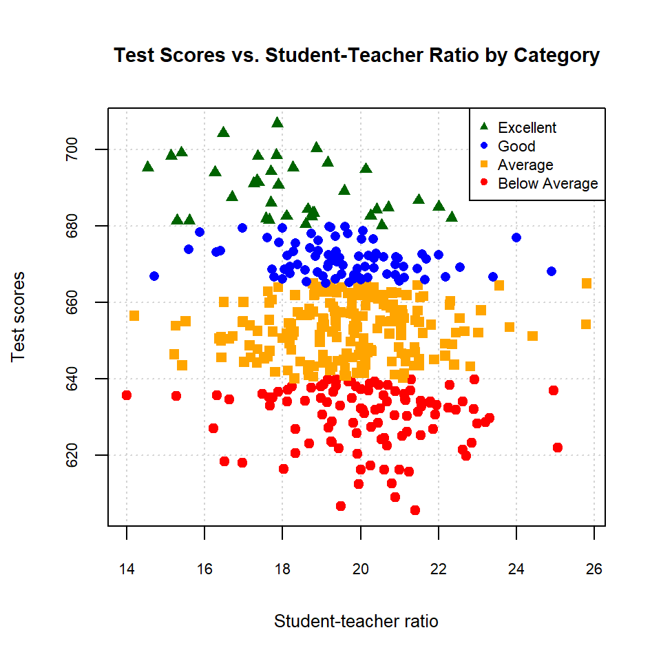
In the next example, we create a line plot of average test scores versus student-teacher ratio. We first sort the dataset by student-teacher ratio by using data = caschool[order(caschool$str), ]. We then use the type = "l" argument in the plot function to create the line plot. The line plot is shown in Figure 6.3.
# Line plot of average test scores vs. student-teacher ratio
data = caschool[order(caschool$str), ]
plot(data$str, data$testscr,
type = "l", # line plot
main = "Average Test Scores vs. Student-Teacher Ratio",
xlab = "Student-teacher ratio",
ylab = "Average Test scores",
col = "steelblue",
lwd = 1, # line width
cex.lab = 0.8, # axis label size
cex.main = 0.9, # main title size
cex.axis = 0.7, # axis tick label size
panel.first = grid() # add grid lines
)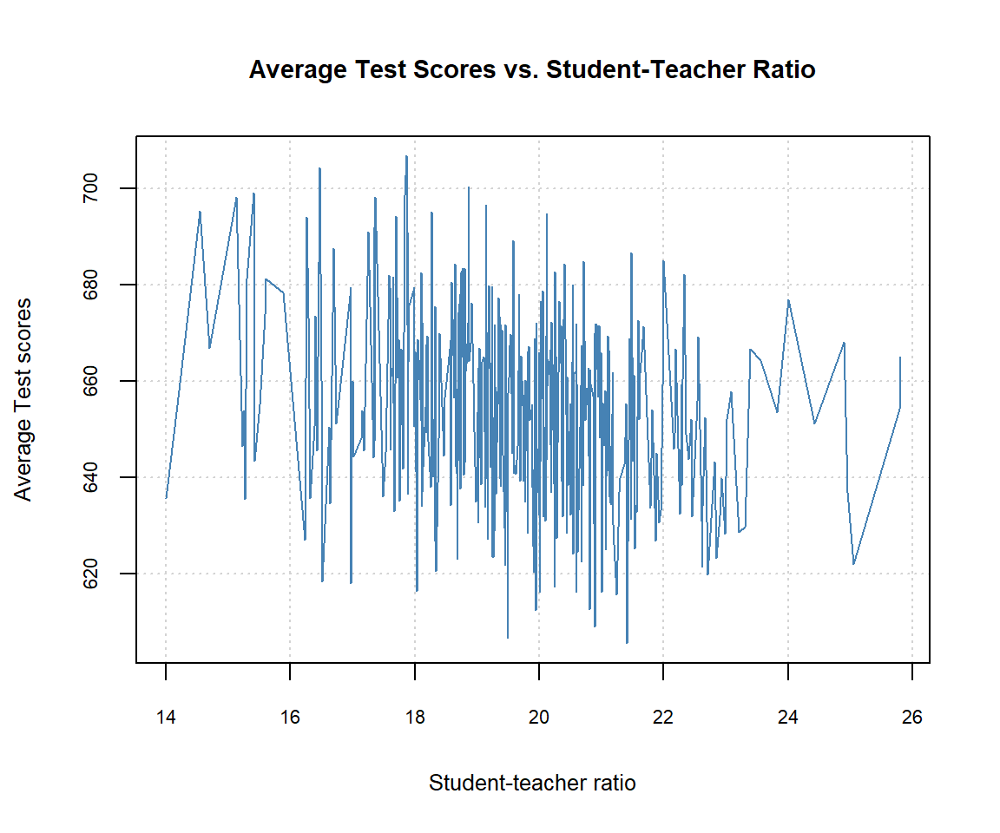
We can also use the line plot to visualize the probability density function of a distribution. In the following example, we plot the probability density function of the standard normal distribution and the student t-distribution with 5 degrees of freedom. We use the low-level function lines to add the t-distribution curve to the existing normal distribution plot. The plot is shown in Figure 6.4.
# Probability density functions of the standard normal and t-distributions
x <- seq(-4, 4, length = 100)
y_normal <- dnorm(x, mean = 0, sd = 1)
y_t <- dt(x, df = 5)
plot(x, y_normal,
type = "l", # line plot
main = "Probability Density Functions",
xlab = "x",
ylab = "Density",
col = "steelblue",
lwd = 2, # line width
cex.lab = 0.8, # axis label size
cex.main = 0.9, # main title size
cex.axis = 0.7 # axis tick label size
)
lines(x, y_t, col = "darkorange", lwd = 2)
legend("topright", legend = c("Standard Normal", "t (df=5)"),
col = c("steelblue", "darkorange"), lwd = 2, cex = 0.7)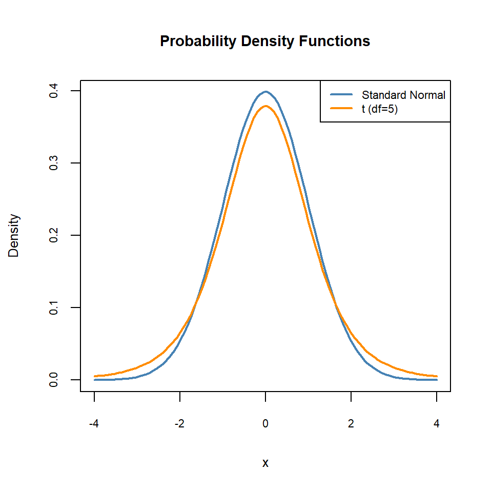
We can also use the plot function to generate plots of probability mass functions for discrete distributions, such as the binomial and Poisson distributions. In the following example, we plot the probability mass functions of the binomial distribution with parameters size = 20 and prob = 0.75. Note that we use type = "h" to create histogram-like vertical lines and the low-level function points to add points to the plot. The plot is shown in Figure 6.5.
# Probability mass functions of the binomial distribution
x_binom <- 0:20
y_binom <- dbinom(x_binom, size = 20, prob = 0.75)
plot(x_binom, y_binom,
type = "h", # histogram-like vertical lines
main = "Probability Mass Function",
xlab = "x",
ylab = "Probability",
col = "steelblue",
lwd = 2, # line width
cex.lab = 0.8, # axis label size
cex.main = 0.9, # main title size
cex.axis = 0.7, # axis tick label size
panel.first = grid()
)
# Add points to the binomial distribution
points(x_binom, y_binom, col = "steelblue", pch = 19)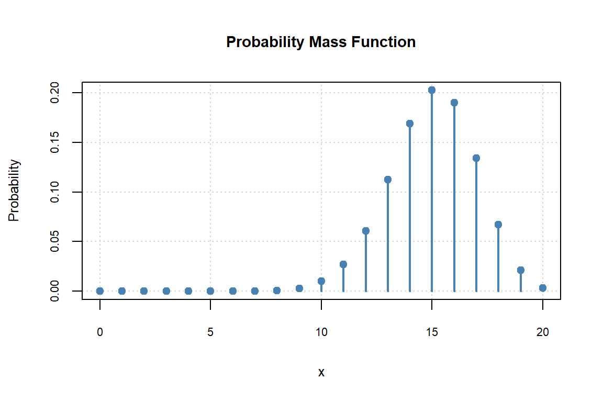
6.2.2 Histograms
We use the hist function to create histograms. The hist function has many arguments that allow us to customize the histogram. The syntax for the hist function is as follows:
hist(x, breaks = "Sturges",
freq = NULL, probability = !freq,
include.lowest = TRUE, right = TRUE, fuzz = 1e-7,
density = NULL, angle = 45, col = "lightgray", border = NULL,
main = paste("Histogram of" , xname),
xlim = range(breaks), ylim = NULL,
xlab = xname, ylab,
axes = TRUE, plot = TRUE, labels = FALSE,
nclass = NULL, warn.unused = TRUE, ...)The breaks argument specifies the number of bins or the method to calculate the number of bins. The freq argument is a logical value that indicates whether to plot frequencies or densities. If freq = TRUE, the histogram will show frequencies; if freq = FALSE, it will show densities. In the following example, we generate a histogram of test scores. The histogram is shown in Figure 6.6.
# Histogram of test scores
hist(caschool$testscr,
breaks = 15, # number of bins
freq = TRUE, # plot frequencies
col = "steelblue", # fill color
border = "black", # border color
main = "Histogram of Test Scores",
xlab = "Test scores",
ylab = "Frequency",
cex.lab = 0.8, # axis label size
cex.main = 0.9, # main title size
cex.axis = 0.7 # axis tick label size
)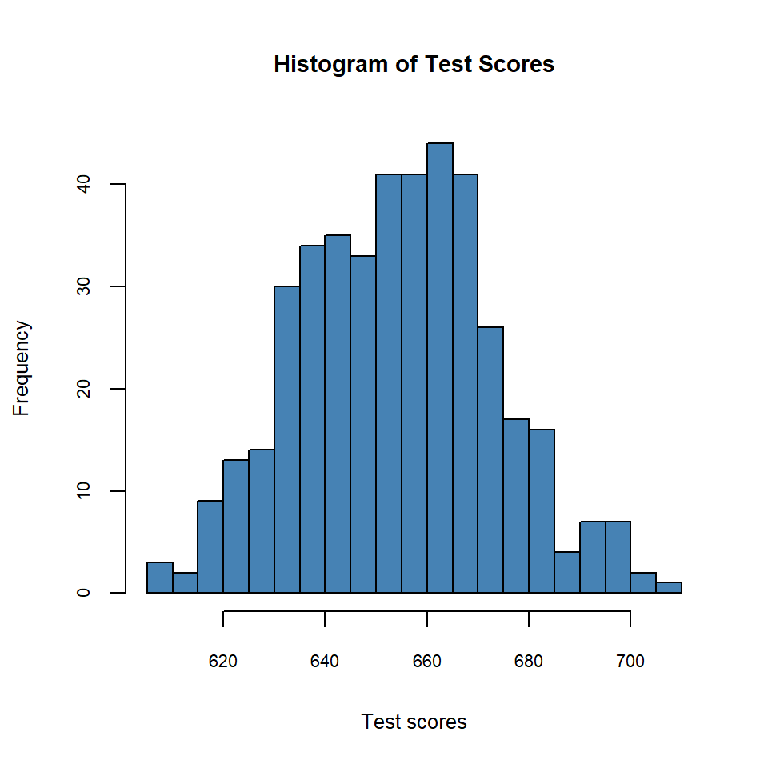
6.2.3 Boxplots
A boxplot can be created using the boxplot function. Its syntax is as follows:
The important argument is formula, which specifies the response variable and the grouping variable. The syntax for the formula argument is response ~ group, where response is the numeric variable to be plotted and group is the categorical variable that defines the groups. In the following example, we create a boxplot of test scores by category. The boxplot is shown in Figure 6.7.
# Boxplot of test scores by category
boxplot(testscr ~ category, data = caschool,
main = "Boxplot of Test Scores by Category",
xlab = "Category",
ylab = "Test scores",
col = c("darkgreen", "blue", "orange", "red"),
cex.lab = 0.8, # axis label size
cex.main = 0.9, # main title size
cex.axis = 0.7 # axis tick label size
)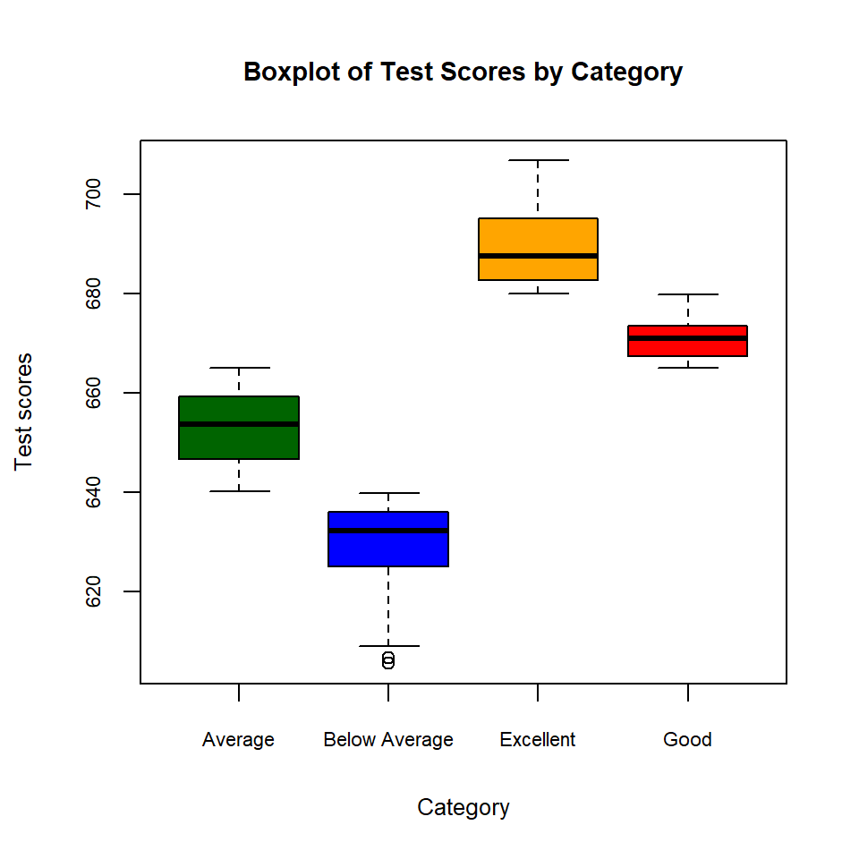
6.2.4 Pie charts
We use the pie function to create pie charts. Its syntax is as follows:
pie(x, labels = NULL, edges = 200, radius = 0.8,
col = NULL, border = "white", lty = NULL, lwd = NULL,
main = NULL, sub = NULL, cex.main = 1, cex.sub = 1,
cex = 1, ...)The important argument is x, which is a numeric vector that contains the values to be plotted. In the following example, we create a pie chart of the number of schools in each category. The pie chart is shown in Figure 6.8.
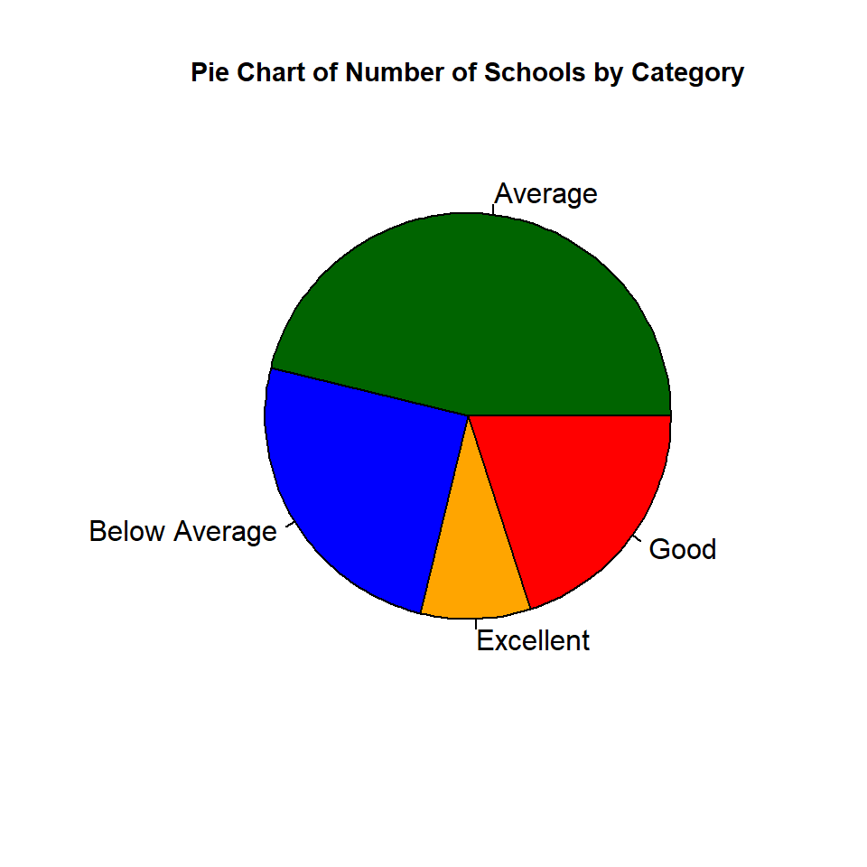
6.2.5 Quantile plots
We use quantile plots to compare the sample quantiles of our data to theoretical quantiles from a specified distribution. The qqplot function creates a Q-Q plot for two samples, while the qqnorm function produces a normal Q-Q plot, i.e., a plot of the sample quantiles against the theoretical quantiles of a normal distribution. The qqline function adds a reference line to the plot. If the points in the Q-Q plot lie approximately along the reference line, this provides evidence that the sample distribution is similar to the theoretical distribution. In the following example, we create a normal Q-Q plot for the test scores variable. The figure indicates that for test scores below approximately 650, the corresponding sample quantiles lie above the theoretical quantiles of the standard normal distribution, whereas for test scores above approximately 700, the sample quantiles lie below the corresponding theoretical quantiles. This suggests that the distribution of test scores has relatively light (thin) left and right tails compared to the normal distribution.
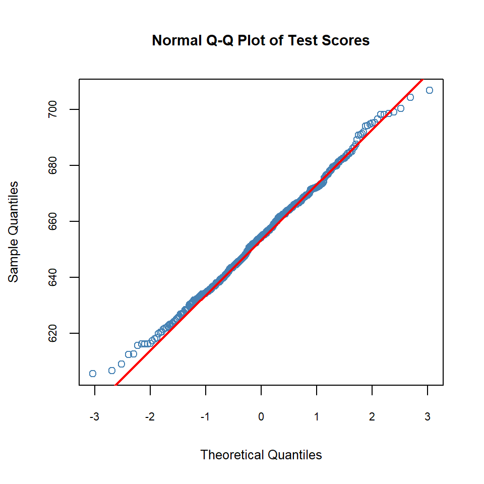
6.2.6 Density plots
The density function estimates the kernel density of a continuous variable. In the following example, we create the density plot of test scores. We use the low-level function polygon to fill the area under the density curve. The density plot is shown in Figure 6.10.
# Density plot of test scores
density_testscr <- density(caschool$testscr)
plot(density_testscr,
main = "Density Plot of Test Scores",
xlab = "Test scores",
ylab = "Density",
col = "steelblue",
lwd = 2, # line width
cex.lab = 0.8, # axis label size
cex.main = 0.9, # main title size
cex.axis = 0.7 # axis tick label size
)
# Fill the area under the density curve
polygon(density_testscr, col = "lightblue", border = "black") 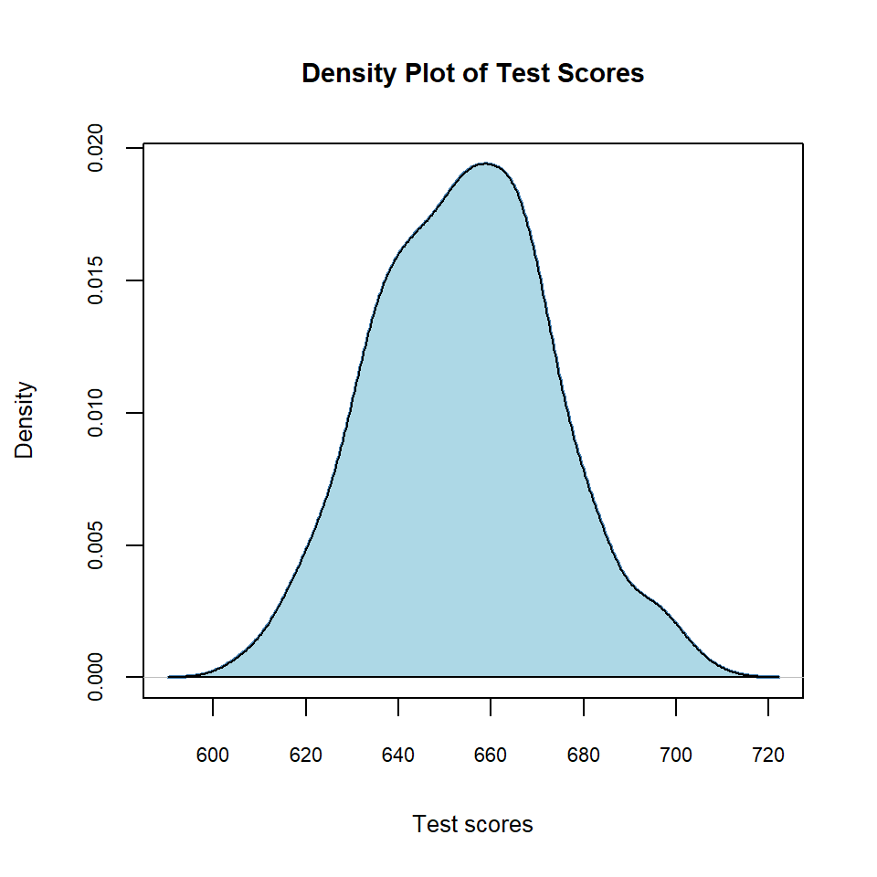
In the following example, we show the density plot and histogram of test scores together in one figure. Note that we set the freq = FALSE argument in the hist function to plot densities instead of frequencies. Also, we use the low-level function lines to add the density curve to the histogram. The figure is shown in Figure 6.11.
# Density plot and histogram of test scores
hist(caschool$testscr,
breaks = 15, # number of bins
freq = FALSE, # plot densities
col = "lightgray", # fill color
border = "black", # border color
main = "Density Plot and Histogram of Test Scores",
xlab = "Test scores",
ylab = "Density",
cex.lab = 0.8, # axis label size
cex.main = 0.9, # main title size
cex.axis = 0.7 # axis tick label size
)
lines(density(caschool$testscr), col = "steelblue", lwd = 2)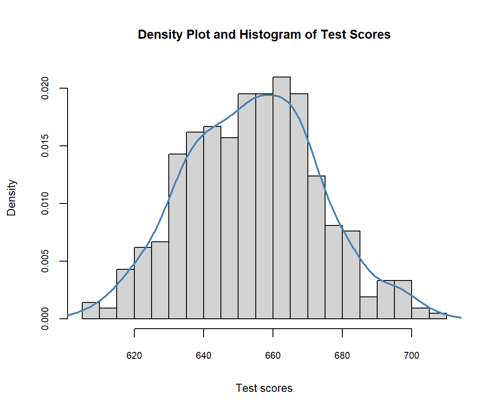
6.2.7 Multiple plots in one figure
We can use the par function to create multiple plots in one figure. The mfrow argument in the par function specifies the number of rows and columns of plots in the figure. In the following example, we create a 2x2 grid of plots: a scatterplot, a histogram, a boxplot, and a density plot. The figure is shown in Figure 6.12.
# Multiple plots in one figure
par(mfrow = c(2, 2)) # 2 rows and 2 columns
# Scatterplot
plot(caschool$str, caschool$testscr,
main = "Scatterplot of Test Scores vs. Student-Teacher Ratio",
xlab = "Student-teacher ratio",
ylab = "Test scores",
col = "steelblue",
pch = 19
)
# Histogram
hist(caschool$testscr,
breaks = 15,
freq = TRUE,
col = "steelblue",
border = "black",
main = "Histogram of Test Scores",
xlab = "Test scores",
ylab = "Frequency"
)
# Boxplot
boxplot(testscr ~ category, data = caschool,
main = "Boxplot of Test Scores by Category",
xlab = "Category",
ylab = "Test scores",
col = c("darkgreen", "blue", "orange", "red")
)
# Density plot
density_testscr <- density(caschool$testscr)
plot(density_testscr,
main = "Density Plot of Test Scores",
xlab = "Test scores",
ylab = "Density",
col = "steelblue",
lwd = 2
)
polygon(density_testscr, col = "lightblue", border = "black")
# Reset par to default
par(mfrow = c(1, 1))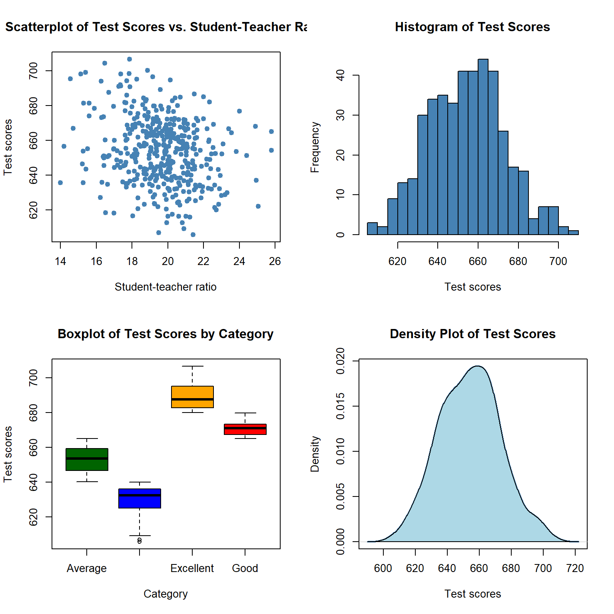
6.3 The tidyverse approach to graphics
The ggplot2 package in the tidyverse package provides a flexible way to create graphics based on the Grammar of Graphics. In this part, we cover the basic concepts and functions in ggplot2 for creating graphics.
6.3.1 Basic concepts in ggplot2
The basic idea of ggplot2 is to build a plot layer by layer. The ggplot function creates a ggplot object, which is the foundation of the plot. Its syntax is as follows:
ggplot(data = NULL, mapping = aes(), ..., environment = parent.frame())where
-
data: A data frame containing the variables to be plotted. -
mapping: Aesthetic mappings created by theaesfunction. This argument defines how variables in the data are mapped to visual properties (aesthetics) of the plot, such as x and y coordinates, colors, shapes, and sizes. We use theaesfunction to create aesthetic mappings. -
...: Additional arguments passed to theggplotfunction.
Below, we create a ggplot object using the caschool dataset. The aes function is used to specify the x and y aesthetics, which map the str variable to the x-axis and the testscr variable to the y-axis.
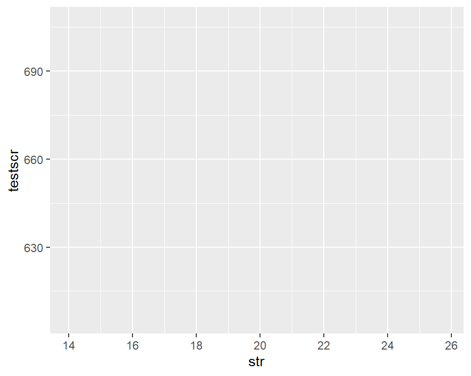
We then add layers to the ggplot object using the + operator. Layers are created using geom functions, such as geom_point, geom_line, geom_histogram, geom_boxplot, and geom_density. Basically, geoms correspond to the high-level plotting functions in the base approach and are the geometric objects that represent the data points in the plot. In Table 6.5, we list some commonly used geoms in ggplot2.
| Geom | Description |
|---|---|
| Graphical primitives | |
geom_blank() |
Display nothing. Most useful for adjusting axes limits. |
geom_point() |
Points. |
geom_path() |
Paths. |
geom_ribbon() |
Ribbons, a path with vertical thickness. |
geom_segment() |
A line segment, specified by start and end position. |
geom_rect() |
Rectangles. |
geom_polygon() |
Filled polygons. |
geom_text() |
Text. |
| One variable | |
geom_bar() |
Display distribution of discrete variable. |
geom_histogram() |
Bin and count continuous variable, display with bars. |
geom_density() |
Smoothed density estimate. |
geom_dotplot() |
Stack individual points into a dot plot. |
geom_freqpoly() |
Bin and count continuous variable, display with lines. |
| Two variables | |
geom_point() |
Scatterplot. |
geom_quantile() |
Smoothed quantile regression. |
geom_rug() |
Marginal rug plots. |
geom_smooth() |
Smoothed line of best fit. |
geom_text() |
Text labels. |
geom_bin2d() |
Bin into rectangles and count. |
geom_density2d() |
Smoothed 2D density estimate. |
geom_hex() |
Bin into hexagons and count. |
geom_count() |
Count number of points at distinct locations. |
geom_jitter() |
Randomly jitter overlapping points. |
geom_bar(stat = "identity") |
A bar chart of precomputed summaries. |
geom_boxplot() |
Boxplots. |
geom_violin() |
Show density of values in each group. |
geom_area() |
Area plot. |
geom_line() |
Line plot. |
geom_step() |
Step plot. |
geom_crossbar() |
Vertical bar with center. |
geom_errorbar() |
Error bars. |
geom_linerange() |
Vertical line. |
geom_map() |
Fast version of geom_polygon() for map data. |
| Three variables | |
geom_contour() |
Contours. |
geom_tile() |
Tile the plane with rectangles. |
geom_raster() |
Fast version of geom_tile() for equal-sized tiles. |
geom_contour_filled() |
Filled contours. |
Each geom function understands a set of aesthetic mappings that define how variables in the data are mapped to visual properties of the geom. For example, the geom_point function understands the following aesthetics (type ?geom_point in the R console):
-
x: x-coordinate of the points
-
y: y-coordinate of the points -
color: color of the points -
size: size of the points -
shape: shape of the points -
alpha: transparency of the points -
fill: fill color of the points (for shapes that have a fill) -
stroke: width of the point border (for shapes that have a border) -
group: grouping variable for the points
We can either use aesthetics in the aes function or use them as arguments in the geom_point function. If we use an aesthetic inside the aes function, it is mapped to a variable in the data. However, if we use an aesthetic outside the aes function, it is set to a constant value, allowing us to customize the appearance of the geom.
6.3.2 Scatterplots
In the following example, we create a scatterplot of test scores versus student-teacher ratio. The color and size of the points are specified using the color and size arguments in the geom_point function. The labs function is used to add titles and labels to the plot. The scatterplot is shown in Figure 6.14.
# Scatterplot of test scores vs. student-teacher ratio
ggplot(data = caschool, aes(x = str, y = testscr)) +
geom_point(color = "steelblue", size = 2) +
labs(title = "Test Scores vs. Student-Teacher Ratio",
x = "Student-teacher ratio",
y = "Test scores")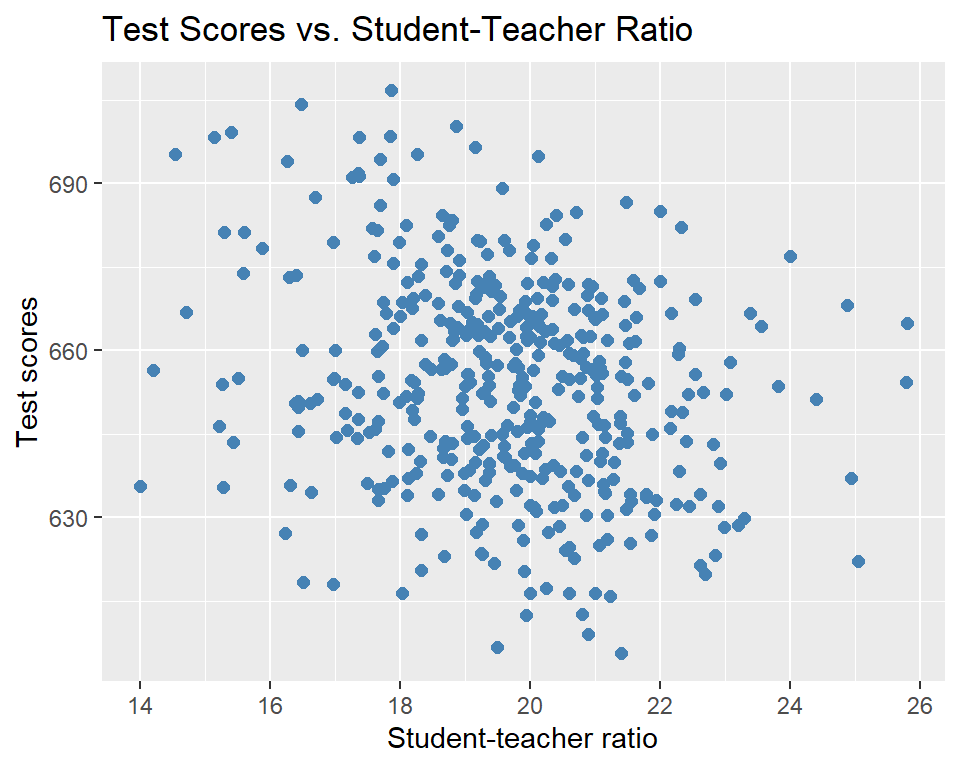
In the above example, we set the color and size aesthetics to constant values in the geom_point function. We can also map these aesthetics to variables in the data using the aes function, as shown below.
In the following example, we map the color aesthetic to the category variable in the aes function. This automatically assigns different colors to the points based on their category. The scatterplot is shown in Figure 6.15.
# Scatterplot of test scores vs. student-teacher ratio by category
ggplot(data = caschool, aes(x = str, y = testscr, color = category)) +
geom_point(size = 2) +
labs(title = "Test Scores vs. Student-Teacher Ratio by Category",
x = "Student-teacher ratio",
y = "Test scores") 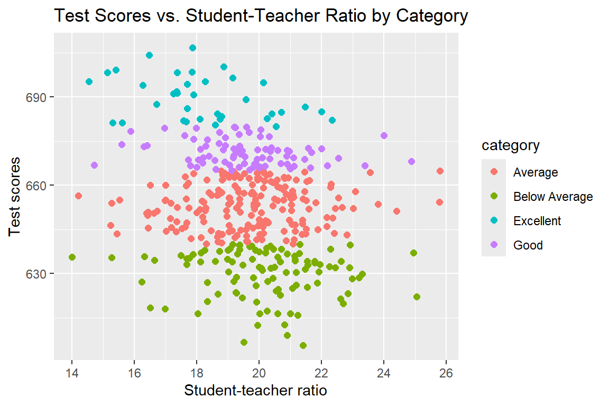
We can change the legend title and labels using the scale_color_manual function. In the following example, we customize the colors and legend of the scatterplot. The scatterplot is shown in Figure 6.16.
# Customized scatterplot of test scores vs. student-teacher ratio by category
# Convert category to factor with specified levels
caschool$category <- factor(caschool$category,
levels = c("Excellent", "Good", "Average", "Below Average"))
# Define custom colors
values <- c("Excellent" = "darkgreen", "Good" = "blue",
"Average" = "orange", "Below Average" = "red")
# Define custom labels
labels <- c("Excellent", "Good", "Average", "Below Average")
# Scatterplot
ggplot(data = caschool, aes(x = str, y = testscr, color = category)) +
geom_point(size = 2) +
scale_color_manual(values = values,
name = "School Category",
labels = labels) +
labs(title = "Test Scores vs. Student-Teacher Ratio by Category",
x = "Student-teacher ratio",
y = "Test scores")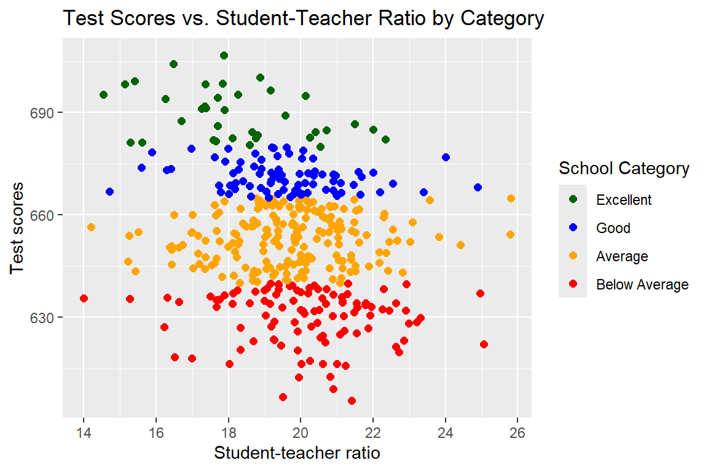
In the following example, we first create a binary variable str_dummy that indicates whether the student-teacher ratio is above or below 20. We then use the geom_jitter function to create a scatterplot of testscr versus str_dummy with jittered points. The geom_jitter function adds random noise to the points to reduce overplotting. The scatterplot is shown in Figure 6.17.
# Jittered scatterplot of test scores vs. str_dummy
caschool$str_dummy <- ifelse(caschool$str > 20, "Above 20", "20 or Below")
ggplot(data = caschool, aes(x = str_dummy, y = testscr, color = category)) +
geom_jitter(width = 0.1, height = 0, size = 2, shape = 16) +
labs(x = "Student-teacher ratio",
y = "Test scores")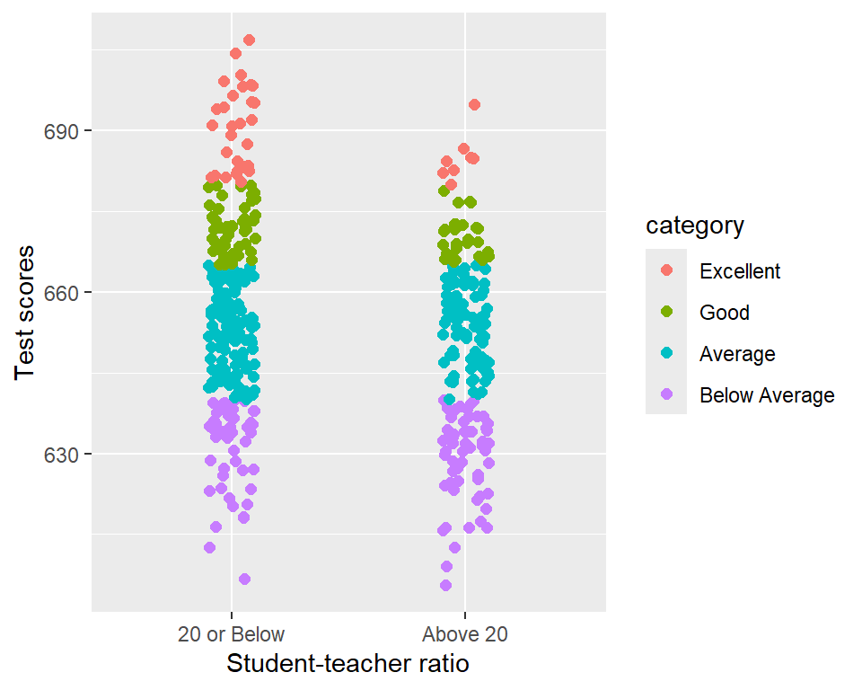
testscr vs. str_dummy
6.3.3 Line plots
In the following example, we create a line plot of average test scores versus student-teacher ratio. Recall that we created a new dataset data that is sorted by student-teacher ratio. We use the geom_line function to create the line plot. The line plot is shown in Figure 6.18.
# Line plot of average test scores vs. student-teacher ratio
data = caschool[order(caschool$str), ]
ggplot(data = data, aes(x = str, y = testscr)) +
geom_line(color = "steelblue", linewidth = 1) +
labs(title = "Average Test Scores vs. Student-Teacher Ratio",
x = "Student-teacher ratio",
y = "Average Test scores")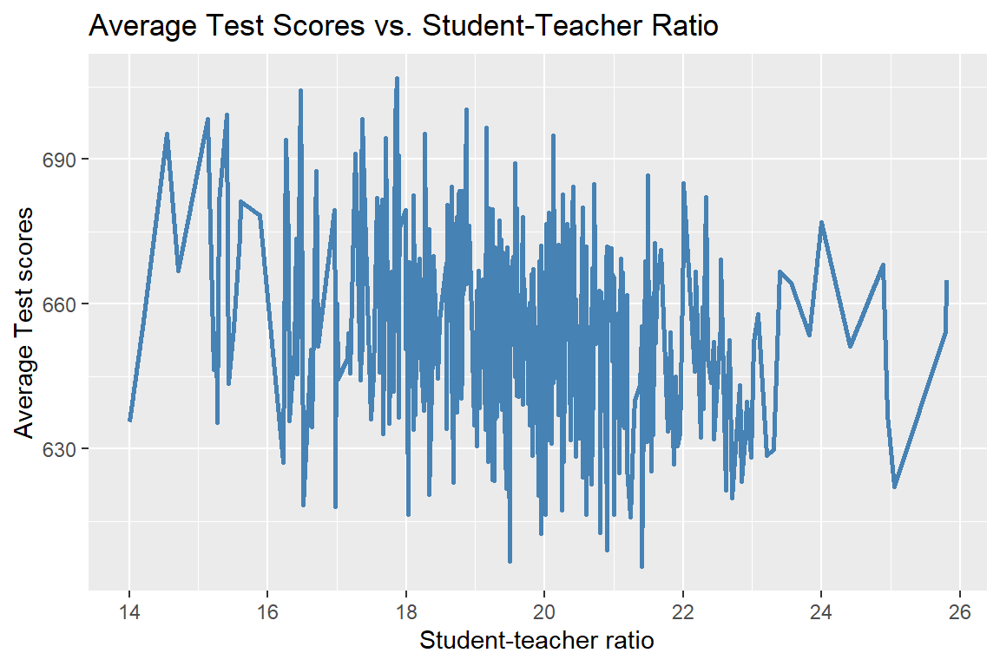
We can also use the geom_line function to plot the probability density function of a distribution. In the following example, we plot the probability density function of the standard normal distribution and the student t-distribution with 5 degrees of freedom. We use two geom_line functions to add the two curves to the plot. We use the color = "Standard Normal" and color = "t (df=5)" arguments inside the aes function to map the colors of the lines to the legend. We then use the scale_color_manual function to customize the colors and legend title. The plot is shown in Figure 6.19.
# Probability density functions of the standard normal and t-distributions
x <- seq(-4, 4, length = 100)
y_normal <- dnorm(x, mean = 0, sd = 1)
y_t <- dt(x, df = 5)
df <- data.frame(x = x, y_normal = y_normal, y_t = y_t)
ggplot(data = df, aes(x = x)) +
geom_line(aes(y = y_normal, color = "Standard Normal"), linewidth = 1) +
geom_line(aes(y = y_t, color = "t (df=5)"), linewidth = 1) +
scale_color_manual(
name = "Distribution",
values = c("Standard Normal" = "steelblue", "t (df=5)" = "darkorange")) +
labs(x = "x", y = "Density")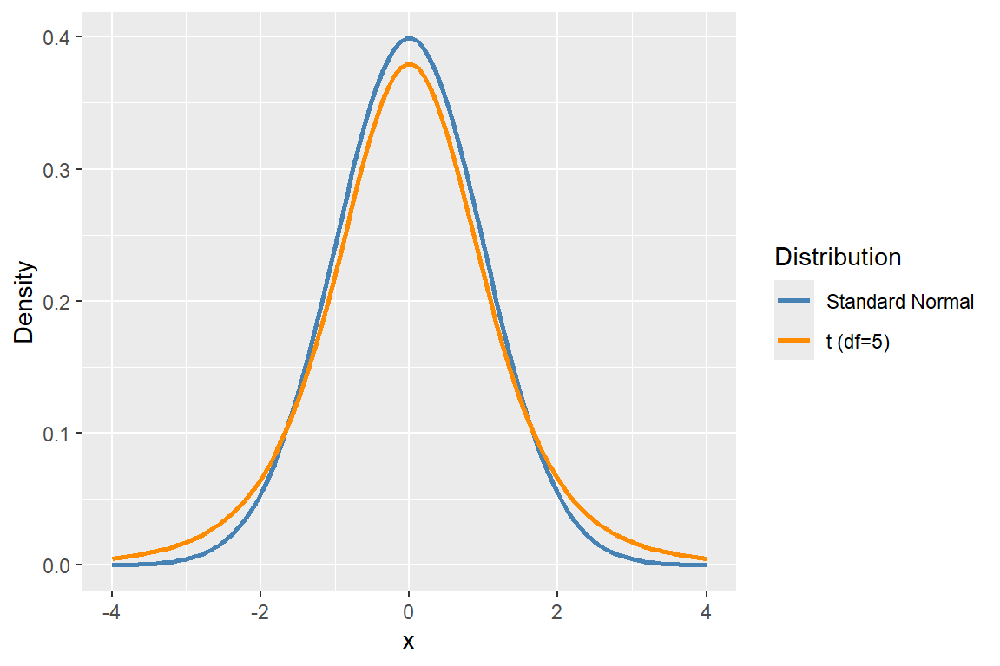
The ggplot version of the probability mass function of the binomial distribution shown in Figure 6.5 can be generated using the geom_segment and geom_point functions. The plot is shown in Figure 6.20.
# Probability mass functions of the binomial distribution
# Data
x_binom <- 0:20
y_binom <- dbinom(x_binom, size = 20, prob = 0.75)
df_binom <- data.frame(x = x_binom, Probability = y_binom)
# Plot
ggplot(data = df_binom, aes(x = x, y = Probability)) +
geom_segment(aes(xend = x, y = 0, yend = Probability), color = "steelblue", linewidth = 1.2) +
geom_point(color = "steelblue", size = 3) +
labs(
title = "Probability Mass Function",
x = "x",
y = "Probability"
)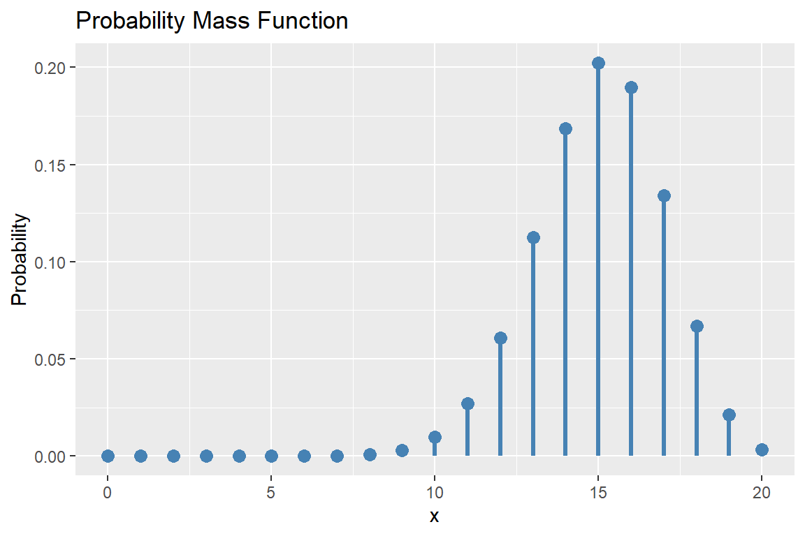
The geom_smooth function can be used to add a smoothed line of best fit to a scatterplot. In the following example, we create a scatterplot of test scores versus student-teacher ratio and add a smoothed line of best fit using the geom_smooth function. The plot is shown in Figure 6.21.
# Scatterplot of test scores vs. student-teacher ratio with smoothed line
ggplot(data = caschool, aes(x = str, y = testscr)) +
geom_point(color = "steelblue", size = 2) +
geom_smooth(method = "loess", color = "darkorange", se = TRUE) +
labs(x = "Student-teacher ratio",
y = "Test scores")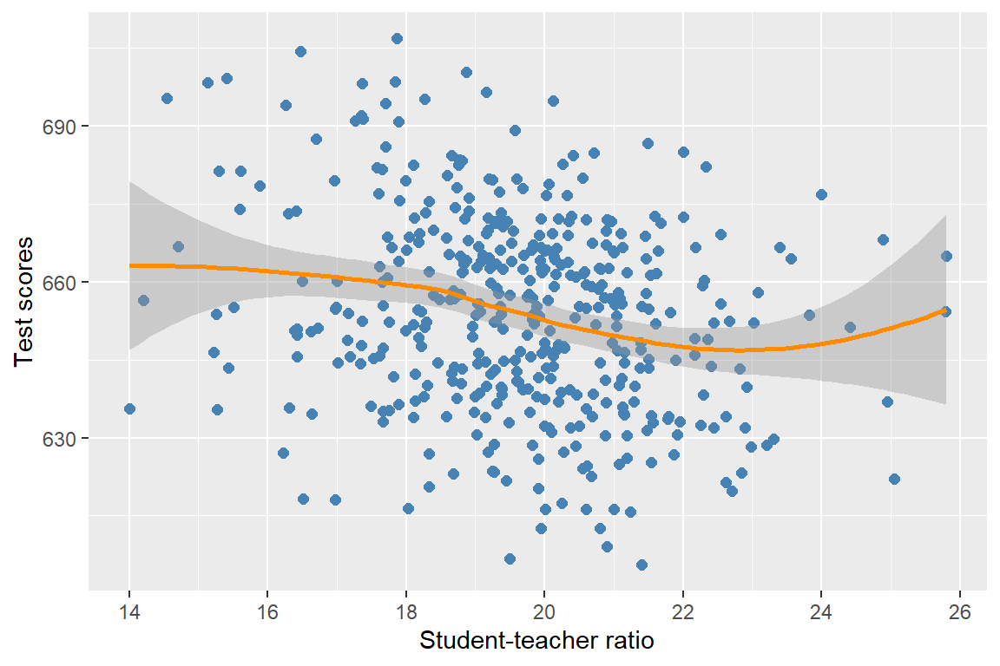
6.3.4 Histograms
The syntax for the geom_histogram function is as follows:
geom_histogram(mapping = NULL, data = NULL,
stat = "bin", position = "stack",
...,
binwidth = NULL, bins = NULL,
na.rm = FALSE, show.legend = NA,
inherit.aes = TRUE)It understands the following aesthetics: (i) x: x-coordinate of the bars, (ii) y: height of the bars (computed by default), (iii) fill: fill color of the bars, and (iv) color: border color of the bars.
In the following example, we generate the histogram of test scores. The argument binwidth = 5 specifies the width of each bin. The histogram is shown in Figure 6.22.
# Histogram of test scores
ggplot(data = caschool, aes(x = testscr)) +
geom_histogram(binwidth = 5, fill = "steelblue", color = "white") +
labs(x = "Test scores",
y = "Count")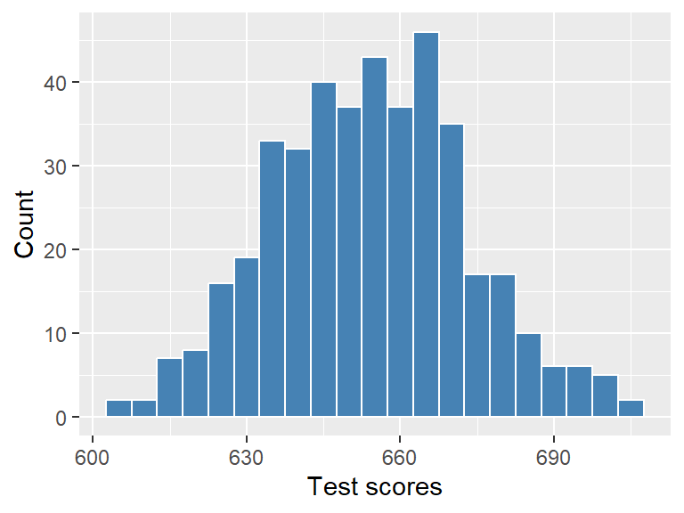
6.3.5 Bar charts
The geom_bar function is similar to the geom_histogram function, but it is used for categorical variables. It also assumes the same aesthetics as the geom_histogram function. In the following example, we generate a bar chart of the number of school districts in each category. The bar chart is shown in Figure 6.23.
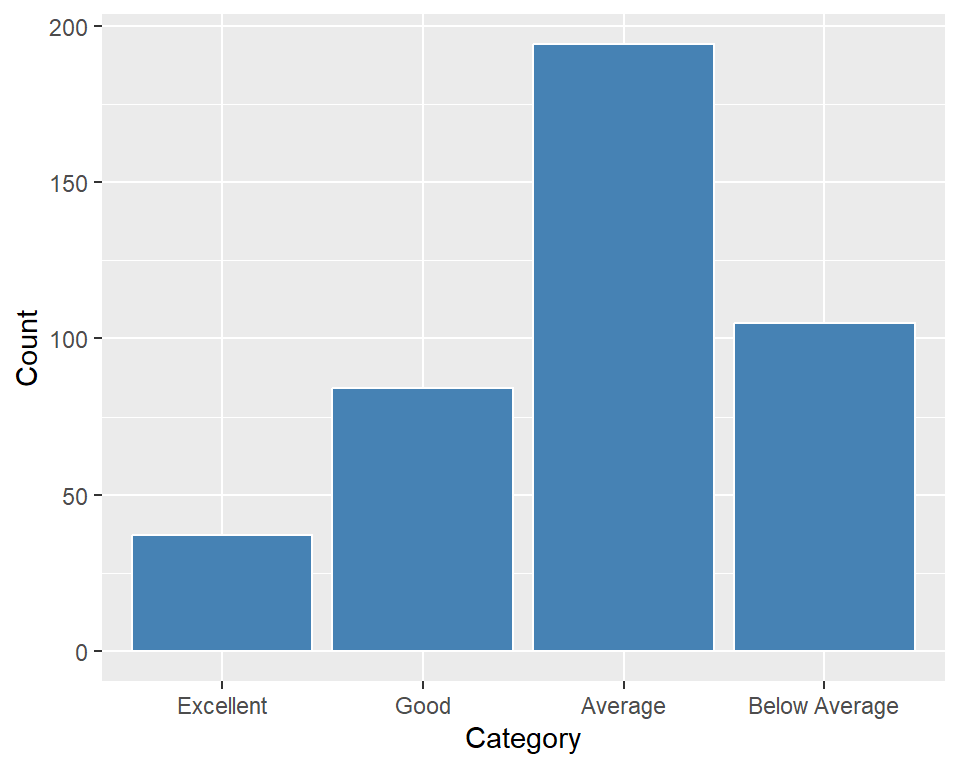
We can also use the geom_bar function to create pie charts. In the following example, we create a pie chart of the number of school districts in each category. Here, the option width = 1 in the geom_bar function makes the bars full width, and the coord_polar function transforms the bar chart into a pie chart. The theme_void function removes the axes and background for a cleaner look. The pie chart is shown in Figure 6.24.
# Pie chart of number of schools by category
ggplot(data = caschool, aes(x = "", fill = category)) +
geom_bar(width = 1) +
coord_polar(theta = "y") +
scale_fill_manual(values = c("red", "darkgreen", "orange", "steelblue"),
name = "Category") +
labs(title = "Number of Schools by Category") +
theme_void()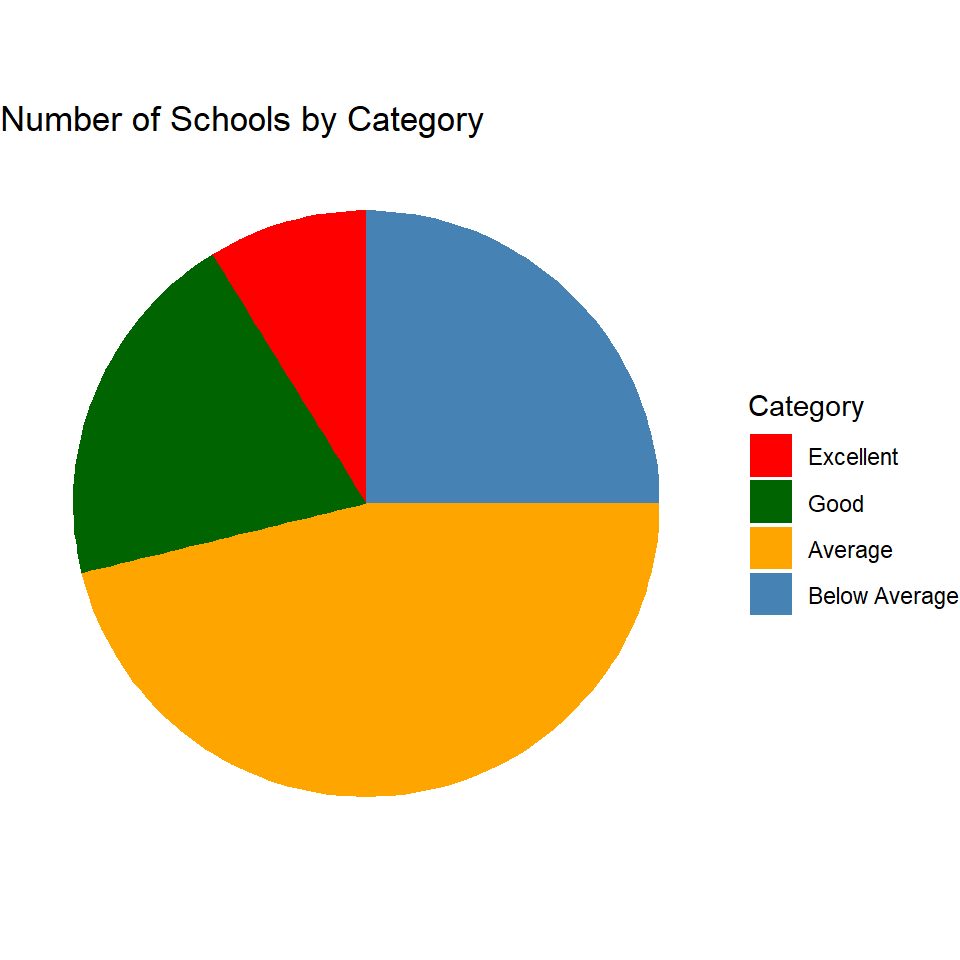
6.3.6 Boxplots
We use the geom_boxplot function to create boxplots. It assumes the same aesthetics as the geom_bar function. Its syntax is as follows:
geom_boxplot(mapping = NULL, data = NULL,
stat = "boxplot", position = "dodge",
...,
outlier.colour = NULL,
outlier.shape = 19,
outlier.size = 1.5,
outlier.stroke = 0.5,
notch = FALSE,
na.rm = FALSE,
show.legend = NA,
inherit.aes = TRUE)In the following example, we create a boxplot of test scores by category. Here, we use the fill aesthetic to specify different fill colors for each category. To hide the legend, we use theme(legend.position = "none"). The boxplot is shown in Figure 6.25.
# Boxplot of test scores by category
ggplot(data = caschool, aes(x = category, y = testscr, fill = category)) +
geom_boxplot() +
scale_fill_manual(values = c("darkgreen", "blue", "orange", "magenta")) +
labs(title = "Boxplot of Test Scores by Category",
x = "Category",
y = "Test scores") +
theme(legend.position = "none")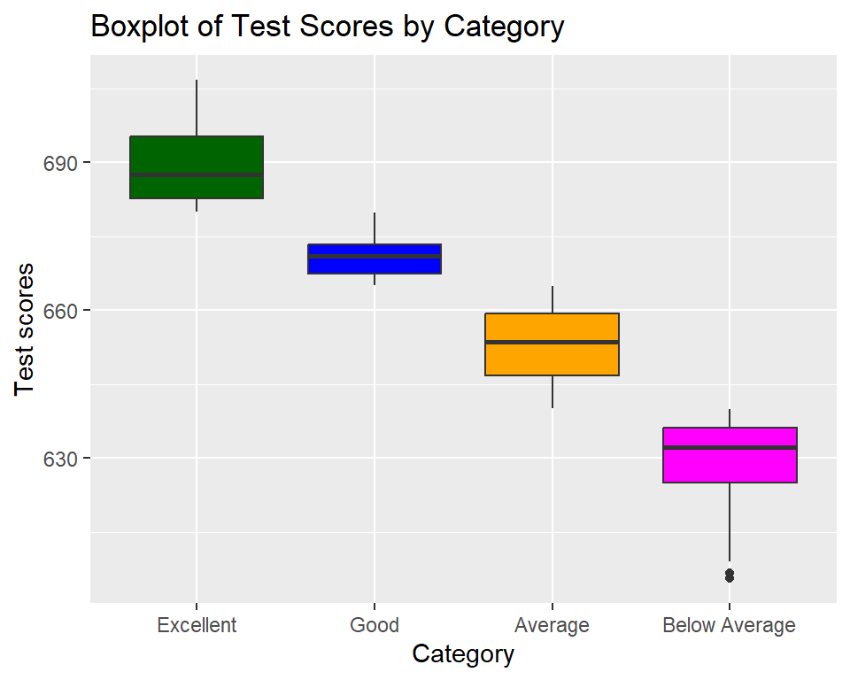
In the following example, we do not use the fill aesthetic inside the aes function. Instead, we set the fill argument in the geom_boxplot function to a constant value. This creates a boxplot with the same fill color for all categories. If we want to assign a different color to each box, we can use fill = c("darkgreen", "blue", "orange", "magenta") in the geom_boxplot function. The boxplot is shown in Figure 6.26.
# Boxplot of test scores by category with constant fill color
ggplot(data = caschool, aes(x = category, y = testscr)) +
geom_boxplot(fill = "steelblue") +
labs(title = "Boxplot of Test Scores by Category",
x = "Category",
y = "Test scores")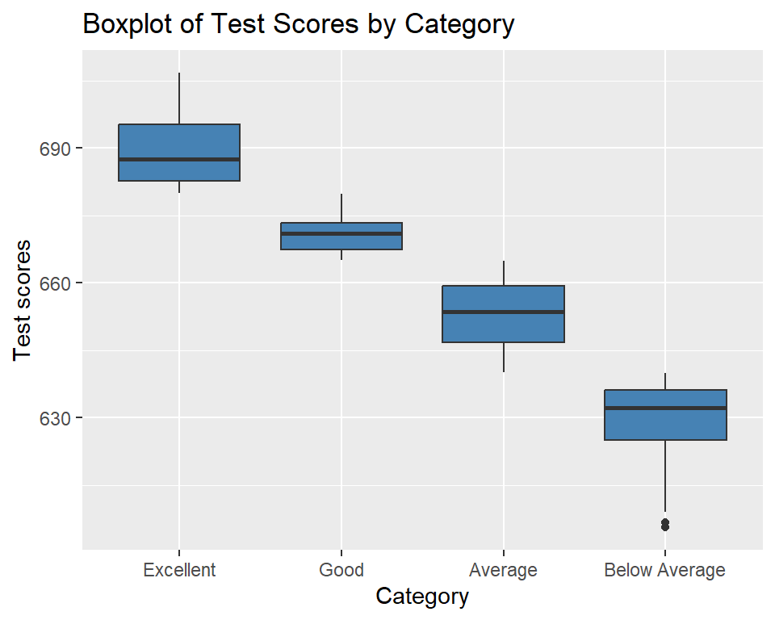
6.3.7 Quantile plots
The geom_qq function creates the normal Q-Q plot, and the geom_qq_line function adds a reference line to the plot. In the following example, we create the normal Q-Q plot of test scores.
# Normal Q-Q plot of test scores
ggplot(data = caschool, aes(sample = testscr)) +
geom_qq(color = "steelblue", size = 2, shape = 19) +
geom_qq_line(distribution = qnorm, color = "red", linewidth = 1) +
labs(x = "Theoretical Quantiles",
y = "Sample Quantiles")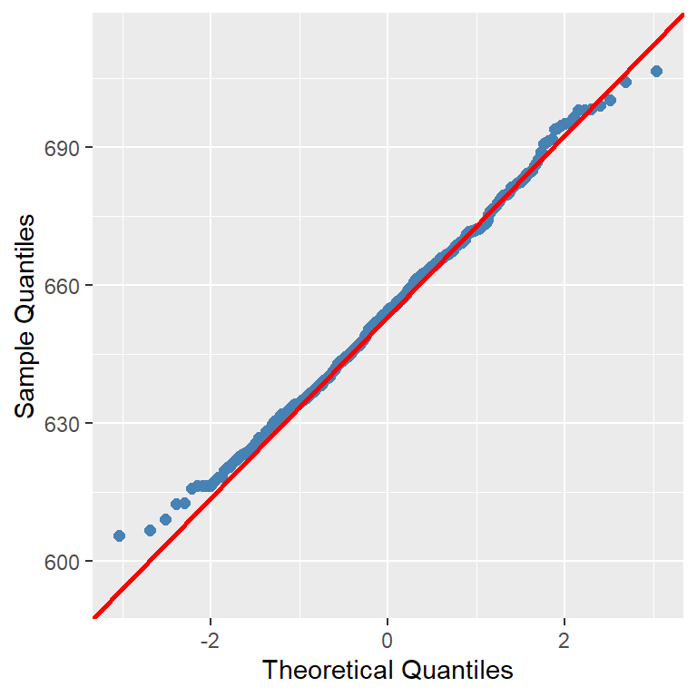
In the following example, we create a Q-Q plot of test scores against the t-distribution with 5 degrees of freedom. We use the distribution argument in the geom_qq function to specify the theoretical distribution. The geom_qq_line function adds a reference line based on the t-distribution with 5 degrees of freedom. The plot shows that the sample quantiles of test scores deviate from the theoretical quantiles of the t-distribution in the left and right tails, suggesting that the distribution of test scores has relatively light (thin) tails compared to the t-distribution with 5 degrees of freedom.
# Q-Q plot of test scores against t-distribution with 5 degrees of freedom
ggplot(data = caschool, aes(sample = testscr)) +
geom_qq(distribution = qt, dparams = list(df = 5),
color = "steelblue", size = 2, shape = 19) +
geom_qq_line(distribution = qt, dparams = list(df = 5),
color = "red", linewidth = 1) +
labs(x = "Theoretical Quantiles",
y = "Sample Quantiles")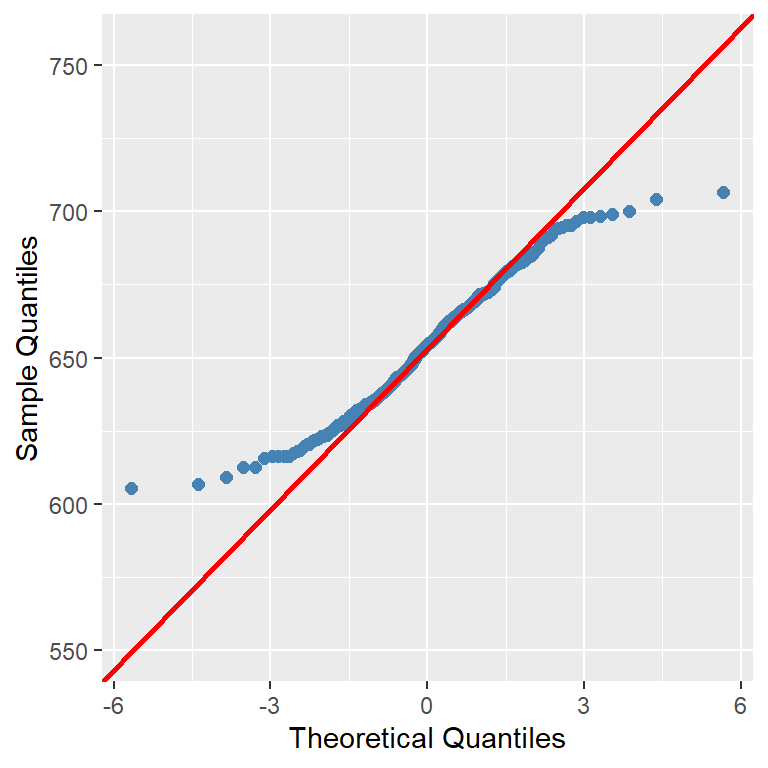
6.3.8 Density plots
The geom_density function can be used to create density plots. Its syntax is as follows:
geom_density(mapping = NULL, data = NULL,
stat = "density", position = "identity",
...,
na.rm = FALSE, show.legend = NA,
inherit.aes = TRUE)It understands the following aesthetics: (i) x: x-coordinate of the density curve, (ii) y: height of the density curve (computed by default), (iii) fill: fill color of the area under the density curve, (iv) color: border color of the density curve, (v) linetype: line type of the density curve, and (vi) size: line width of the density curve, (vii) alpha: transparency of the fill color, and (viii) group: grouping variable for the density curve.
In the following example, we create a density plot of test scores.
# Density plot of test scores
ggplot(data = caschool, aes(x = testscr)) +
geom_density(fill = "lightblue", color = "black", linewidth = 1) +
labs(title = "Density Plot of Test Scores",
x = "Test scores",
y = "Density")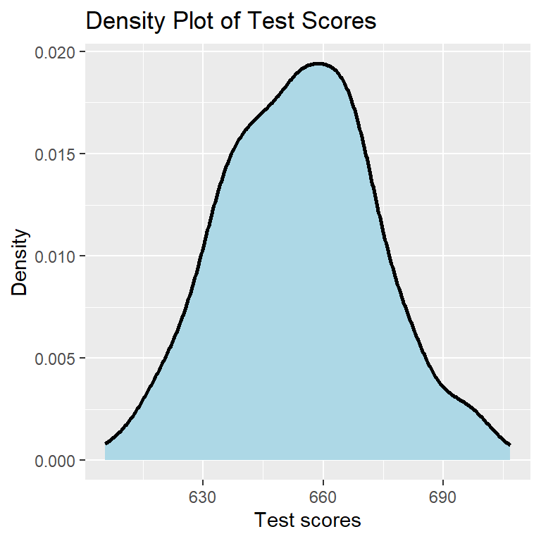
We can overlay a density plot on a histogram. In the following example, we create a histogram of test scores and overlay a density plot on it. The plot is shown in Figure 6.30.
# Density plot and histogram of test scores
ggplot(data = caschool, aes(x = testscr)) +
geom_histogram(aes(y = after_stat(density)), binwidth = 5,
fill = "lightgray", color = "black") +
geom_density(color = "steelblue", linewidth = 1) +
labs(title = "Density Plot and Histogram of Test Scores",
x = "Test scores",
y = "Density")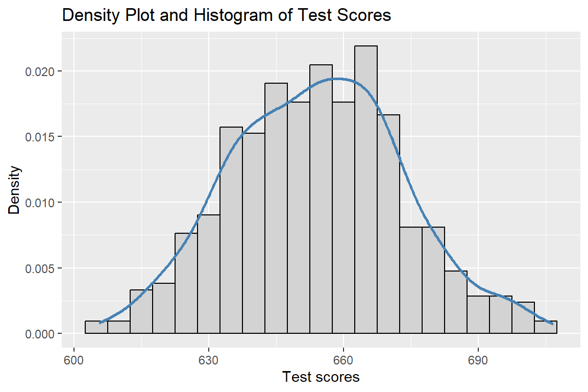
6.3.9 Multiple plots in one figure
We can use the gridExtra package to create multiple plots in one figure. The grid.arrange function in the gridExtra package arranges multiple ggplot objects in a grid layout. In the following example, we create a 2x2 grid of plots. The figure is shown in Figure 6.31.
# Multiple plots in one figure
# Scatterplot
p1 <- ggplot(data = caschool, aes(x = str, y = testscr)) +
geom_point(color = "steelblue", size = 2) +
labs(title = "Scatterplot of Test Scores vs. Student-Teacher Ratio",
x = "Student-teacher ratio",
y = "Test scores")
# Histogram
p2 <- ggplot(data = caschool, aes(x = testscr)) +
geom_histogram(binwidth = 5, fill = "steelblue", color = "white") +
labs(title = "Histogram of Test Scores",
x = "Test scores",
y = "Count")
# Boxplot
p3 <- ggplot(data = caschool, aes(x = category, y = testscr
)) +
geom_boxplot(fill = c("darkgreen", "blue", "orange", "red")) +
labs(title = "Boxplot of Test Scores by Category",
x = "Category",
y = "Test scores")
# Density plot
p4 <- ggplot(data = caschool, aes(x = testscr)) +
geom_density(fill = "lightblue", color = "black", linewidth = 1) +
labs(title = "Density Plot of Test Scores",
x = "Test scores",
y = "Density")
# Arrange plots in a 2x2 grid
grid.arrange(p1, p2, p3, p4, nrow = 2, ncol = 2)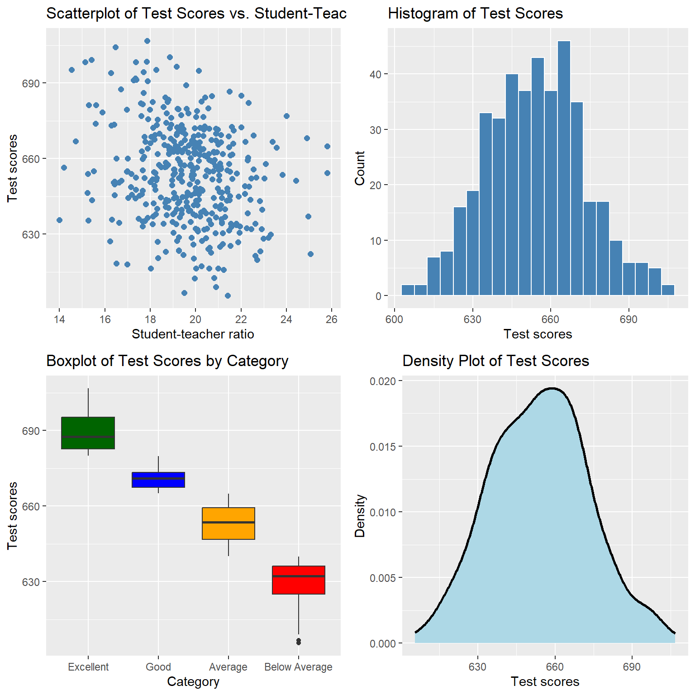
6.3.10 Themes in ggplot2
In ggplot2, there are several built-in themes to customize the appearance of plots. In Table 6.6, we list some commonly used themes.
| Theme | Description |
|---|---|
theme_gray() |
Default ggplot2 theme with gray background and white grid lines. |
theme_bw() |
Black and white theme with white background and black grid lines. |
theme_minimal() |
Minimal theme with no background and grid lines. |
theme_classic() |
Classic theme with white background and no grid lines. |
theme_light() |
Light theme with light gray background and white grid lines. |
theme_dark() |
Dark theme with dark gray background and light grid lines. |
theme_void() |
Theme with no background, grid lines, or axes. |
In the following example, we create a scatterplot of test scores versus student-teacher ratio using the theme_classical theme. The scatterplot is shown in Figure 6.32.
# Scatterplot of test scores vs. student-teacher ratio with minimal theme
ggplot(data = caschool, aes(x = str, y = testscr)) +
geom_point(color = "steelblue", size = 2) +
labs(title = "Test Scores vs. Student-Teacher Ratio",
x = "Student-teacher ratio",
y = "Test scores") +
theme_classic()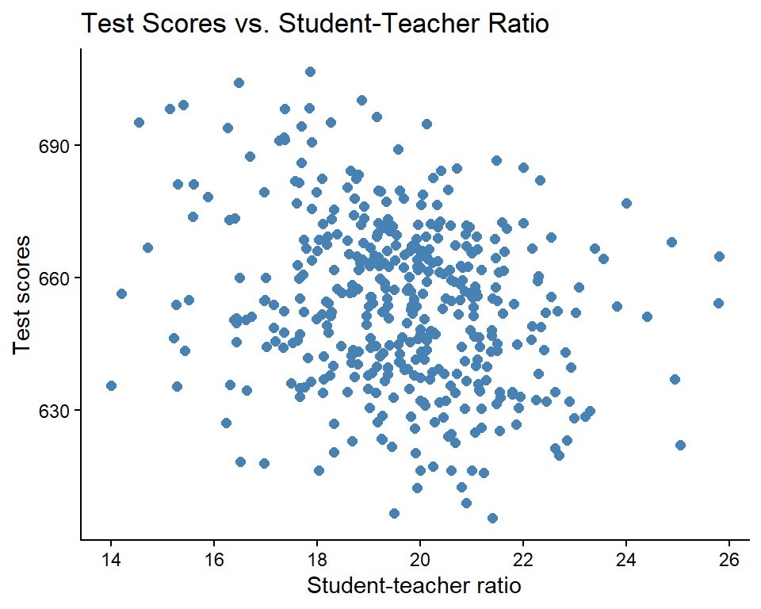
6.4 Further reading
For further reading on R graphics, we recommend Jones et al. (2022) for the base R graphics system, and Wickham (2016) and Wickham et al. (2023) for the ggplot2 package.